Puji dan syukur penulis panjatkan ke hadirat Tuhan Yang Maha Esa atas limpahan rahmat dan karunia-Nya, sehingga Laporan Teknis Instalasi dan Konfigurasi Toolchain Pengembangan Aplikasi Mobile SALUT ini dapat diselesaikan dengan baik dan tepat waktu.
Laporan ini mendokumentasikan tahapan fundamental dalam penyiapan lingkungan pengembangan, mencakup pemasangan Flutter SDK, Dart, Java Development Kit (JDK 21 LTS), Android Studio, Android SDK Command-line Tools, CMake, NDK, editor Visual Studio Code, hingga konfigurasi server lokal XAMPP dan framework Laravel 12.
Ucapan terima kasih penulis sampaikan kepada Bapak Dosen Pengampu serta rekan-rekan mahasiswa yang telah memberikan bimbingan dan masukan konstruktif dalam penyelesaian instalasi ini. Semoga laporan ini bermanfaat bagi pembaca.
Keberhasilan pembangunan aplikasi lintas platform (cross-platform mobile) berakar pada kesiapan toolchain dan rantai kompilasi yang kokoh. Pengembangan sistem informasi SALUT (Sistem Arsip Kelulusan dan Tracer Study Alumni SMK) memerlukan integrasi antara frontend mobile berbasis Flutter dan backend server berbasis PHP Laravel 12 dengan basis data relasional MySQL. Oleh karena itu, penyiapan lingkungan pengembangan yang presisi menjadi prasyarat mutlak sebelum tahap perancangan logika bisnis dimulai.
Tujuan dari penyiapan lingkungan instalasi ini adalah:
1. Mengunduh dan mengonfigurasi Flutter SDK versi stabil dan Dart SDK pada sistem operasi Windows.
2. Mengonfigurasi Java Development Kit (JDK 21 LTS) dan Android SDK Command-line Tools untuk kompilasi APK.
3. Mempersiapkan IDE Visual Studio Code beserta ekstensi pendukung rekayasa Flutter.
4. Memastikan seluruh dependensi berstatus siap pakai melalui verifikasi flutter doctor tanpa kesalahan.
5. Menyiapkan web server lokal XAMPP dan framework Laravel 12 sebagai fondasi RESTful API.
Manfaat penyiapan lingkungan ini adalah tersedianya ekosistem pengkodean yang stabil, mendukung proses kompilasi cepat (hot-reload), dan memudahkan deployment aplikasi secara mandiri baik pada emulator maupun perangkat fisik Android.
Bab ini menguraikan tahapan teknis pelaksanaan instalasi lingkungan pengembangan aplikasi SALUT secara berurutan, dimulai dari pengunduhan paket resmi Flutter, konfigurasi variabel sistem, penyiapan Android SDK, hingga verifikasi diagnosa.
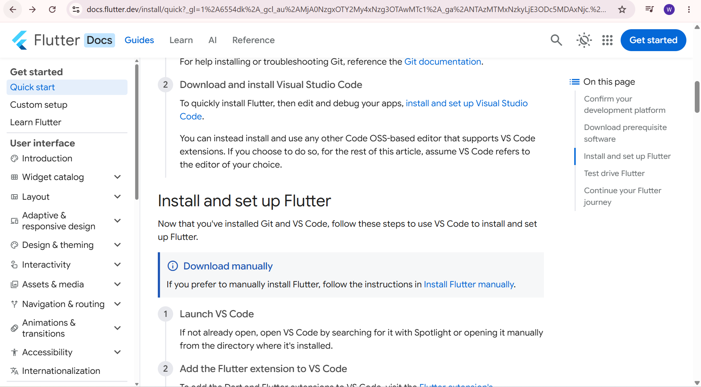
Gambar 2.1 memperlihatkan halaman pengunduhan resmi Flutter SDK pada peramban web. Pengembang mengunduh bundel kompilasi stabil untuk sistem operasi Windows guna memperoleh pustaka inti antarmuka grafis dan Dart compiler.
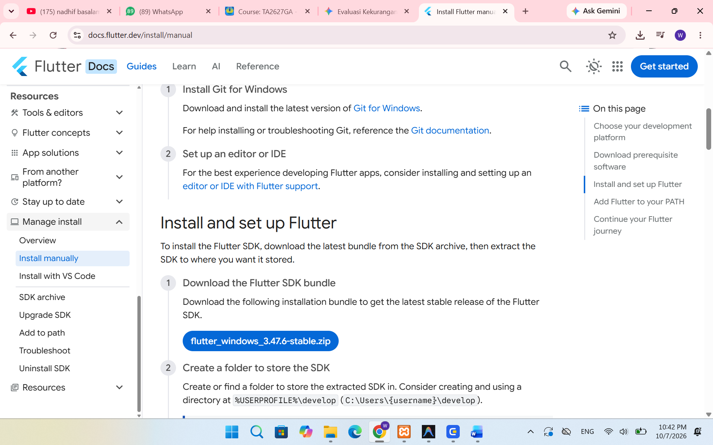
Gambar 2.2 mendokumentasikan berkas arsip zip Flutter SDK yang telah berhasil diunduh. Berkas ini kemudian diekstrak ke direktori penyimpanan lokal tanpa spasi.
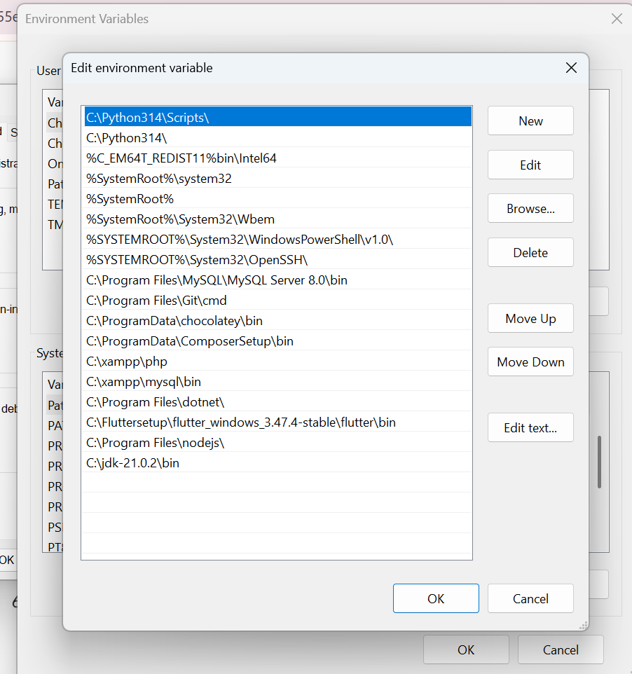
Gambar 2.3 menunjukkan jendela konfigurasi Environment Variables pada Windows. Jalur direktori flutter\bin ditambahkan ke variabel PATH sistem agar perintah terminal flutter dan dart dapat dipanggil secara global dari sesi terminal mana pun.
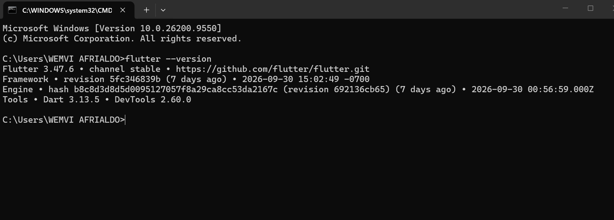
Gambar 2.4 membuktikan keberhasilan pengenalan perintah flutter --version pada command prompt, yang menampilkan rincian rilis Flutter Channel stable beserta versi Dart SDK yang menyertainya.
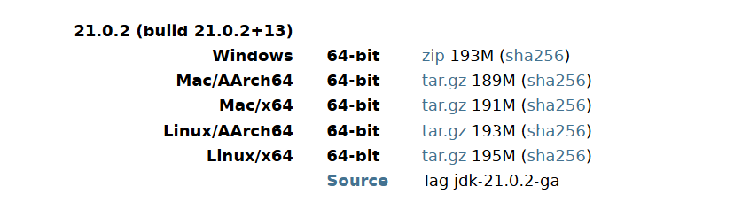
Gambar 2.5 menampilkan berkas pemasangan Java Development Kit (JDK 21 LTS). JDK 21 diperlukan oleh Gradle untuk memproses kompilasi kode Kotlin dan Java pada layer platform Android.
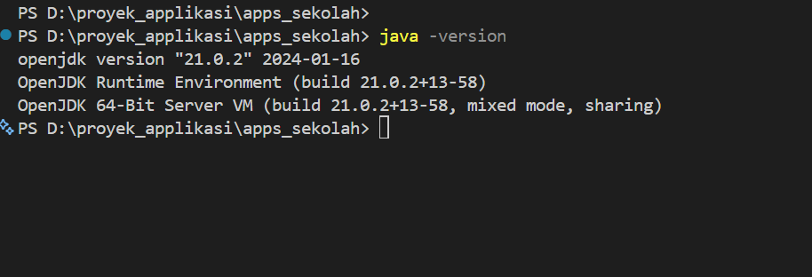
Gambar 2.6 memvalidasi eksekusi java -version yang mengonfirmasi bahwa OpenJDK 64-Bit Server VM telah aktif dengan benar di sistem.
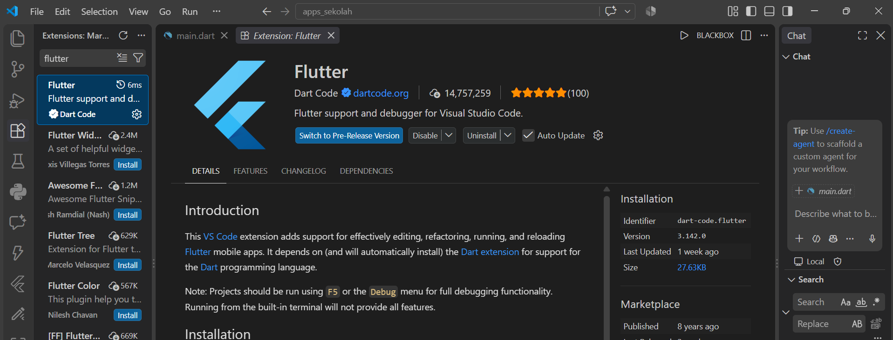
Gambar 2.7 memperlihatkan pemasangan ekstensi Flutter pada Visual Studio Code. Ekstensi ini menyediakan fitur code completion, hot reload, widget tree inspection, dan debugging langsung.
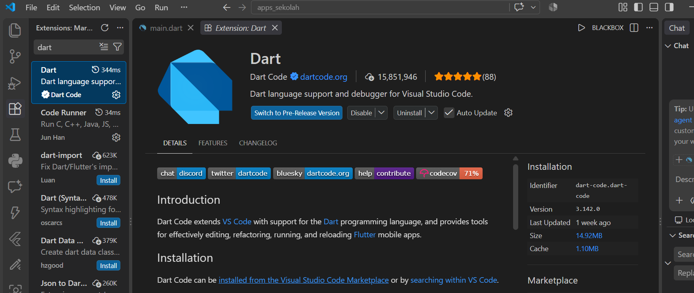
Gambar 2.8 mendokumentasikan ekstensi bahasa Dart yang memberikan dukungan linter dan analisis statis kode aplikasi.
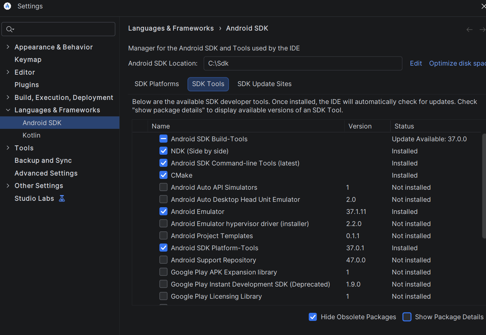
Gambar 2.9 menampilkan panel Android SDK Manager. Dipasang komponen Android SDK Command-line Tools (latest) dan CMake guna menjamin kesiapan toolchain kompilasi native C/C++ pada pustaka tertentu.
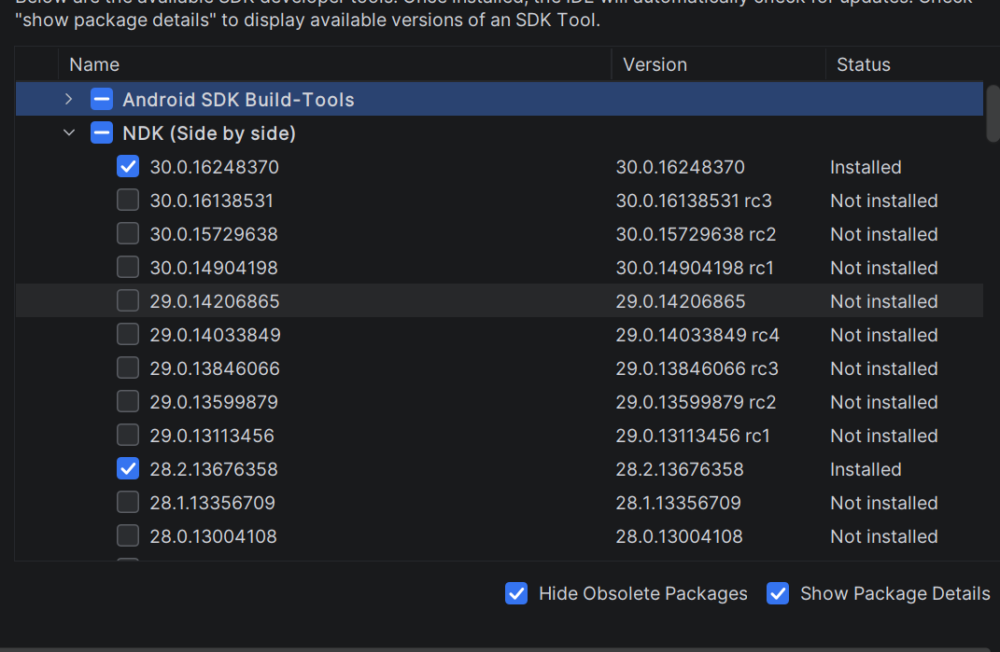
Gambar 2.10 memverifikasi status pemasangan Android NDK (Side by side) yang diperlukan untuk proses linking kode native Android.
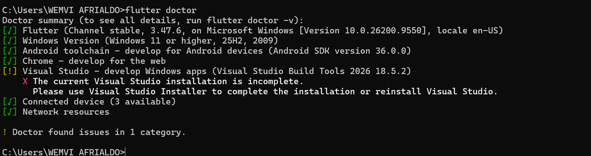
Gambar 2.11 menampilkan laporan diagnosa flutter doctor yang mengonfirmasi bahwa seluruh komponen vital: Flutter SDK, Android toolchain (licenses accepted), Android Studio, VS Code, dan perangkat terhubung (connected device) telah berstatus centang hijau (No issues found!).
Seluruh rangkaian tahapan instalasi dan konfigurasi toolchain untuk pengembangan aplikasi SALUT telah berhasil diselesaikan dengan baik. Sistem operasi Windows telah terkonfigurasi dengan Flutter SDK, Dart, JDK 21, Android SDK Tools, VS Code IDE, dan XAMPP Server. Hasil diagnosa flutter doctor membuktikan tidak ada kendala dependensi sehingga lingkungan pengembangan siap digunakan untuk perancangan aplikasi.